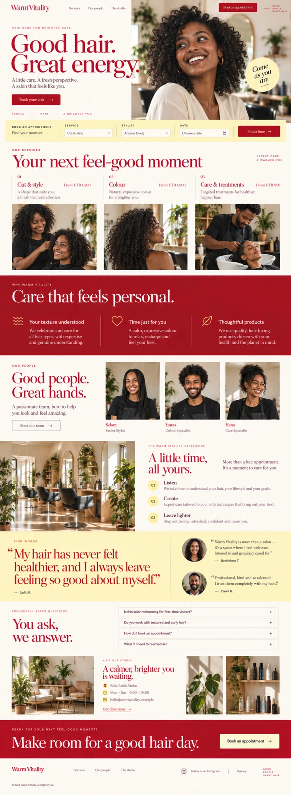

Certified templates: source and browser
The source boards define the visual direction. The browser figures show actual compiled production pages. Copy, photography, and template compositions differ by business. This is a visual review, not a pixel match to a raster board.
Strict template run and screenshot checksums · Production accessibility run
Selam
The movement template retains its rounded navigation, generous hero typography, photo collage, lilac canvas, and separate class schedule. Content cards and newsletter keep that palette. The hero note uses the approved muted-text token.
Review the retained journey: book · scheduler · blog · article · gallery · collection · newsletter ·
Bloom
The hair studio retains its warm canvas, red editorial headings, yellow booking strip, and asymmetric photography. Mobile content and signup stack within the viewport.
Approved source board
Production desktop, light Production mobile, dark
Production mobile, dark
Review the retained journey: book · scheduler · blog · article · gallery · collection · newsletter ·
Meron
The atelier retains serif editorial headings, fine rules, numbered sections, generous image areas, and restrained wine-colored actions. The booking handoff waits for its published identity.
Review the retained journey: book · scheduler · blog · article · gallery · collection · newsletter ·
Abugida
The language template has its own independent composition, typographic rhythm, blue editorial palette, and content layouts. It uses the crafted editorial board as its source family.
Review the retained journey: book · scheduler · blog · article · gallery · collection · newsletter ·
Tena
The clinic retains the quiet trust source family: calm neutral surfaces, readable headings, clinical photography, service hierarchy, and green actions. Its content and booking surfaces preserve that identity.
Review the retained journey: book · scheduler · blog · article · gallery · collection · newsletter ·